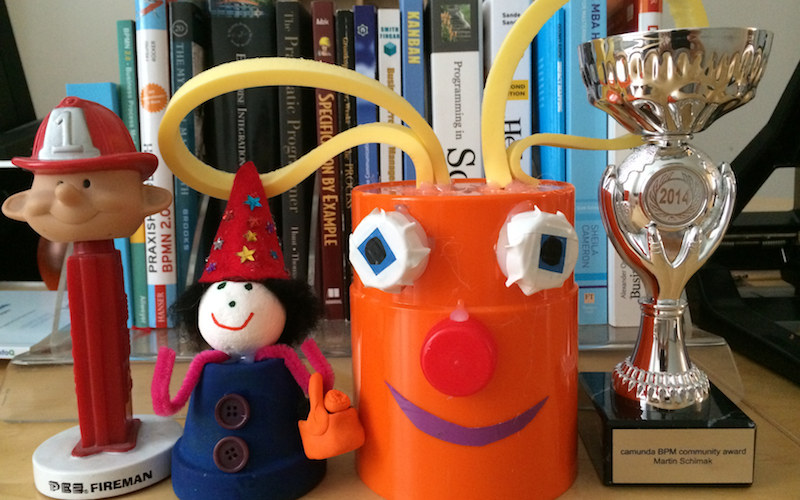

In die schiere Unzahl der an mich bereits ergangenen Auszeichnungen und Ehrungen reiht sich nun ein ganz besonderer Neuzugang ein: im Rahmen der Geburtstagsfeier für camunda.org erhielt ich - völlig verblüfft und unvorbereitet - den camunda BPM community award 2014! Hier zu sehen in meiner persönlichen Ehrengalerie ganz rechts. :-)

Unmittelbarer Anlaß dafür war die Veröffentlichung einer stabilen Version 1.0 meiner kleinen Community Extension camunda-bpm-assert, über die camunda hier und ich selbst da schon berichtet hatten.
Bei der Feier des ersten Geburtstags von camunda.org am Dienstag in Berlin gab es von Daniel Meyer und seinem Team eine ganze Reihe an spannenden News rund um das unmittelbar bevorstehende GA Release 7.1.0-Final zu hören. Nico Rehwaldt berichtete über das gemeinsam mit Zalando gestartete, völlig neue und ambitionierte Projekt bpmn.io. Und Jakob Freund, Geschäftsführer der camunda services GmbH, erklärte dem Publikum wie er mit camunda nicht nur im deutschsprachigen Raum, sondern auch weit darüber hinaus reüssieren möchte. Der Schritt an die US Westküste steht für das 2008 gegründete Unternehmen nun ganz unmittelbar und konkret bevor.

Jakob Freund is crossing the chasm.